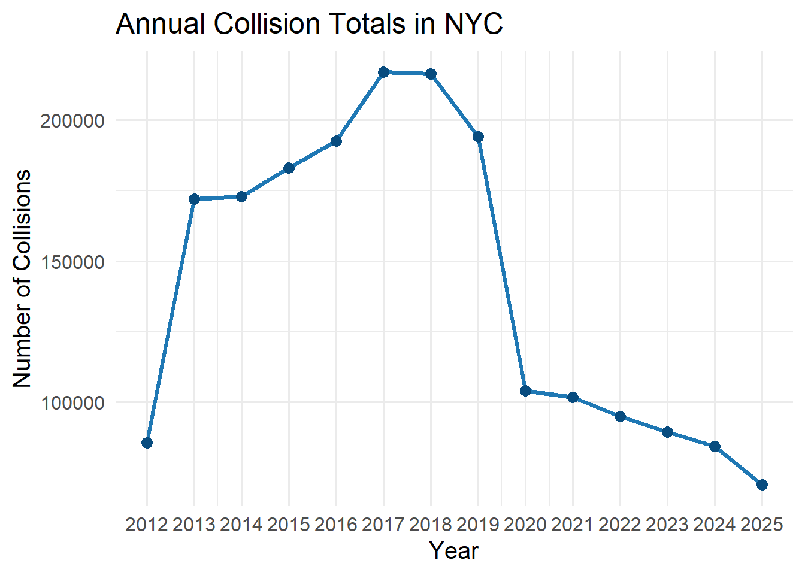
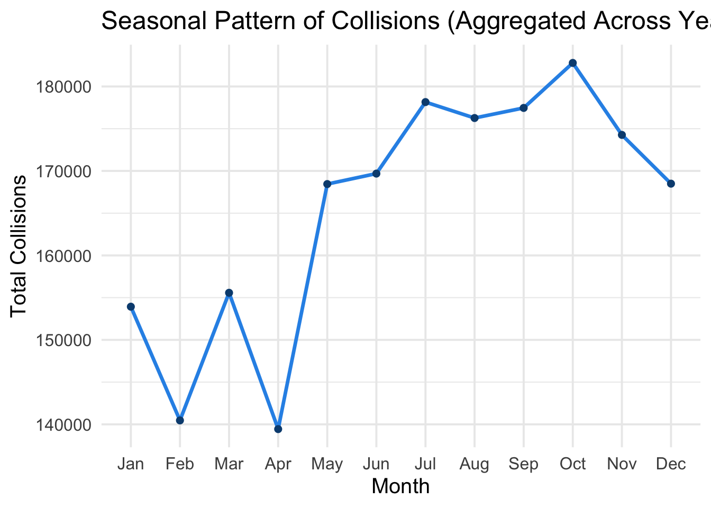
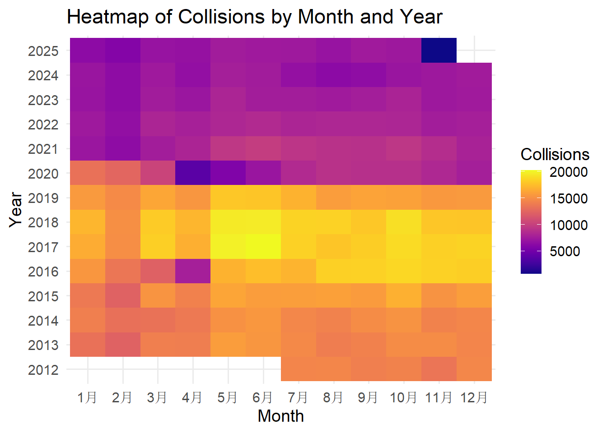
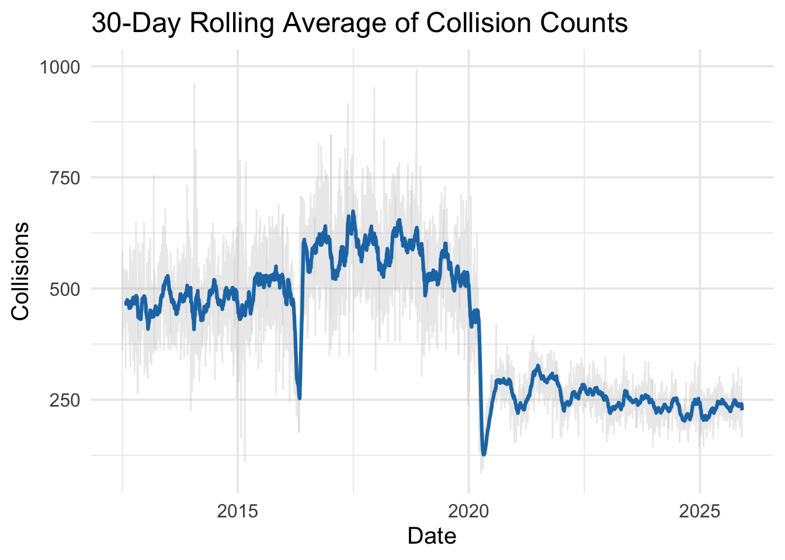
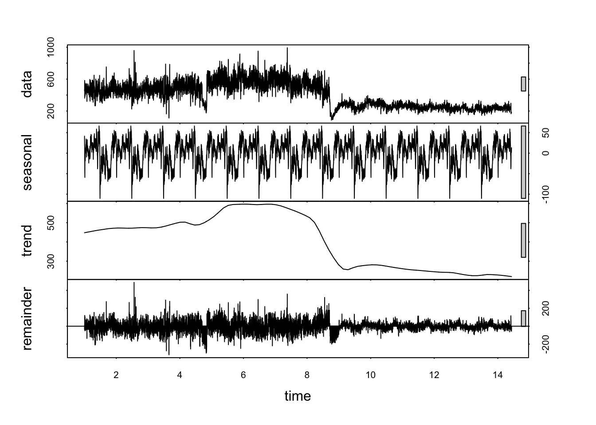

This section focuses exclusively on long-term temporal
behavior of NYC motor vehicle collisions.
Unlike the Overview page, which summarized daily and hourly structure,
this section highlights:
mvc_clean |>
count(crash_year) |>
ggplot(aes(x = crash_year, y = n)) +
geom_line(size = 1.4, color = "#1f78b4") +
geom_point(size = 3, color = "#084c7f") +
scale_x_continuous(breaks = unique(mvc_clean$crash_year)) +
labs(
title = "Annual Collision Totals in NYC",
x = "Year",
y = "Number of Collisions"
) +
theme_minimal(base_size = 15)
From 2012 to 2025, NYC shows clear long-term structural changes in collision totals. The number of reported crashes increased sharply from approximately 85,000 in 2012 to around 170,000 in 2013 and remained at a similar level through 2014. After that, collisions continued to rise gradually, reaching a peak of about 220,000–225,000 collisions in 2017 and 2018, which represents the highest volume in the 14-year period.
Beginning in 2019, crash counts start to decline, but the most dramatic decrease occurs in 2020, dropping sharply to roughly 105,000 collisions—a reduction of over 50% compared with the 2017–2018 peak. This dramatic drop aligns with extensive COVID-19 mobility restrictions, work-from-home mandates, and reduced road activity.
In the years following the pandemic, crash totals remain significantly lower than their pre-COVID peak (2021-2025) This is a continued downward trajectory, showing that collision rates have not returned to pre-pandemic levels.
mvc_clean |>
mutate(month_label = month(crash_date, label = TRUE)) |>
count(month_label) |>
ggplot(aes(x = month_label, y = n, group = 1)) +
geom_line(size = 1.2, color = "#2C93E8") +
geom_point(size = 2, color = "#084c7f") +
labs(
title = "Seasonal Pattern of Collisions (Aggregated Across Years)",
x = "Month",
y = "Total Collisions"
) +
theme_minimal(base_size = 15)
The aggregated monthly pattern reveals a clear and consistent seasonal cycle in collision counts. Collisions are lowest in the winter months, particularly February and April, where totals fall to around 140,000. Activity then increases through late spring, with a sharp rise from April to May. The highest collision levels occur during August–October, reaching approximately 175,000–182,000, indicating significantly greater roadway activity in late summer and early fall. After October, totals decline again as winter approaches. This seasonal structure suggests that factors such as increased travel, more pedestrians and cyclists, and longer daylight hours likely contribute to higher summer collision volume, while reduced mobility and weather-related caution may drive the lower winter counts.
mvc_clean |>
mutate(
year = crash_year,
month = month(crash_date, label = TRUE)
) |>
count(year, month) |>
ggplot(aes(x = month, y = factor(year), fill = n)) +
geom_tile() +
scale_fill_viridis(option = "C") +
labs(
title = "Heatmap of Collisions by Month and Year",
x = "Month",
y = "Year",
fill = "Collisions"
) +
theme_minimal(base_size = 14)
The heatmap highlights both seasonal and long-term patterns in NYC collisions. From 2012 to around 2018, the warmer colors indicate consistently high monthly collision counts, especially during summer and early fall months such as July–October, which regularly reach 15,000–20,000 collisions per month. In contrast, winter months show lighter colors, reflecting lower activity.
Beginning in 2020, a sharp shift appears: the heatmap becomes noticeably darker overall, with several months—particularly in mid-2020—showing some of the lowest monthly counts in the entire series, consistent with the COVID-related reduction in city mobility. The years following 2021 remain darker than earlier years, indicating that collision levels did not return to pre-2019 highs. This combination of repeating annual cycles and clear structural breaks captures how both seasonal behavior and broader societal changes shape collision patterns over time.
mvc_clean |>
count(crash_date) |>
arrange(crash_date) |>
mutate(
rolling_30 = zoo::rollmean(n, k = 30, fill = NA, align = "right")
) |>
ggplot(aes(x = crash_date)) +
geom_line(aes(y = n), alpha = 0.3, color = "#bbbbbb") +
geom_line(aes(y = rolling_30), color = "#1f78b4", size = 1.1) +
labs(
title = "30-Day Rolling Average of Collision Counts",
x = "Date",
y = "Collisions"
) +
theme_minimal(base_size = 15)
The 30-day rolling average provides a clearer view of underlying trends by smoothing out daily fluctuations. From 2012 to 2019, the smoothed curve shows a stable seasonal rhythm, with collision levels typically ranging from 450 to 650 crashes per day, and short winter dips that recur annually. A pronounced structural shift appears in early 2020, when the rolling average drops sharply to below 300 crashes per day, marking the lowest sustained period in the entire time series and corresponding to COVID-19 lockdowns and dramatically reduced travel. Unlike the temporary winter dips in earlier years, this decrease represents a prolonged disruption in mobility patterns. Following 2020, collision counts do not return to their pre-pandemic levels; instead, they settle into a new, lower range of approximately 300–400 crashes per day through 2025. This smoothed trend underscores both the consistency of pre-pandemic seasonal cycles and the lasting impact of pandemic-era behavior changes, highlighting a long-term shift in NYC traffic dynamics.
daily_counts <- mvc_clean |>
count(crash_date) |>
complete(crash_date = seq(min(crash_date), max(crash_date), by = "day"), fill = list(n = 0))
ts_data <- ts(daily_counts$n, frequency = 365)
decomp <- stl(ts_data, s.window = "periodic")
plot(decomp)
The decomposition breaks the daily collision series into seasonal, trend, and irregular components. The seasonal component shows a highly consistent annual cycle, with predictable rises and dips repeating each year. The trend component highlights the long-term structural pattern: daily collisions gradually increase through the early part of the series, reaching a plateau of around 550–600 collisions per day, before dropping sharply around 2020, when the trend falls to roughly 300–350 collisions per day and remains at this lower level thereafter. The remainder component consists of short-term fluctuations, capturing irregular spikes related to events such as storms, holidays, or sudden disruptions in traffic. Overall, the decomposition makes clear that NYC collisions are shaped by both stable seasonal rhythms and a major structural break associated with the pandemic, resulting in a sustained long-term decline in baseline activity.
Across these exploratory time-series visualizations, several consistent temporal patterns emerge. Collision counts exhibit a clear multi-year decline, particularly after 2019, and a pronounced structural break during the COVID period, after which activity stabilizes at lower levels. At the same time, the data show strong and recurring seasonal cycles, with predictable rises in summer and dips in winter, as well as stable short-term weekday and monthly patterns. The decomposition further highlights distinct trend and cyclical components, separating long-term shifts from regular annual rhythms and short-term irregular fluctuations. Together, these temporal dynamics provide essential context for subsequent modeling and help frame the spatial and contributing-factor analyses that follow.